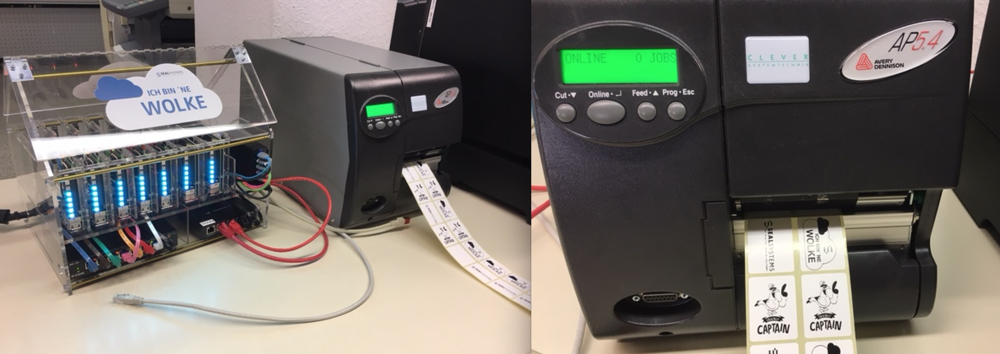
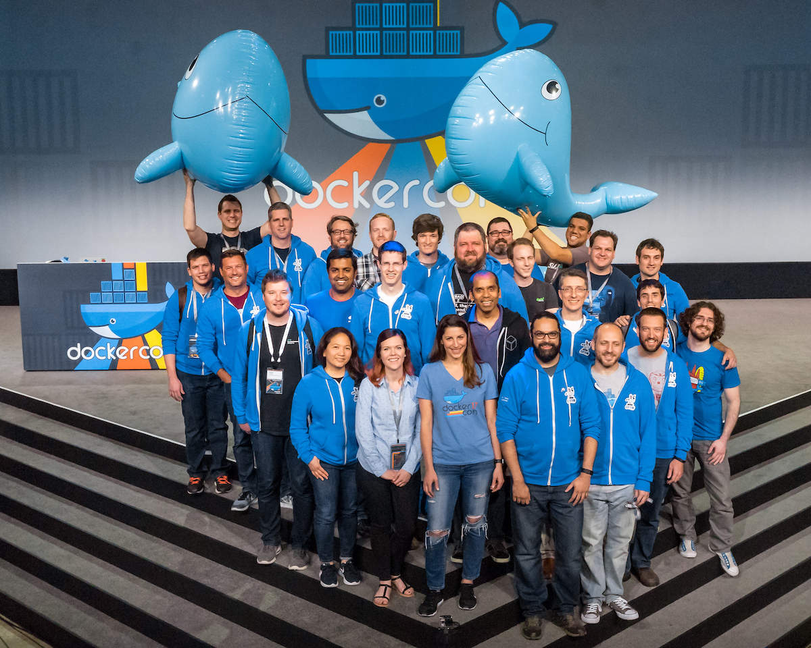

Today is my first day working for Docker, Inc. and I'm absolutely excited to be there. After months of prepartions I got this email today morning.
I love the green buttons on GitHub ;-)
Goodbye SEAL Systems
After nearly 25 years (I started as a working student in 1994) I want to say goodbye to my colleages at SEAL Systems. Wow, that's more than half of my life, but we always had a good time. I'm glad that I could help creating several successful products over these years. I have learned a lot and the whole lifecycle of a product is much much more than just writing some lines of code. You have to build a product, ship it, update and maintain it, replace it with a better, newer product. The enterprise customers are always demanding.
And it was fun to build this tiny cloud to visualize scaling services and health status in hardware, and of course producing paper and labels.

Goodbye Captains
Oh this is a sad one, I have to retire from the Docker Captains program. I want to thank Jenny, Vanessa and Ashlynn for making us Captains happy with briefings, lots of cool swag and exciting DockerCon's. You make this program unique!

I will stay in touch with a lot of captains as I still can learn cool things from them.
Connecting the dots
Yesterday was my last day at SEAL Systems and I realized that this move just made sense for me. Even the logos showed me that :-) I follow what started with my passion and what I want to focus on in the future.
(And for SEAL: You always had containers in your logo ;-)
I will work in the Engineering team at Docker to help shipping new products.
Dear community, don't worry I will stay active in the Windows and Docker community.
Cheers,
Stefan